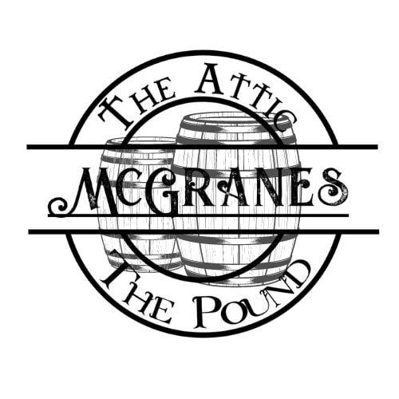

(image sourced from The Pound & The Attic, facebook)
Review
“We really enjoy drinking in this cozy bar. Selection of IPAs is excellent and they now have wow burger available which is great given you have to order food with your beer. Staff really friendly and social distancing amongst customers well managed.”